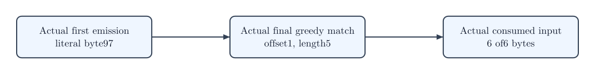
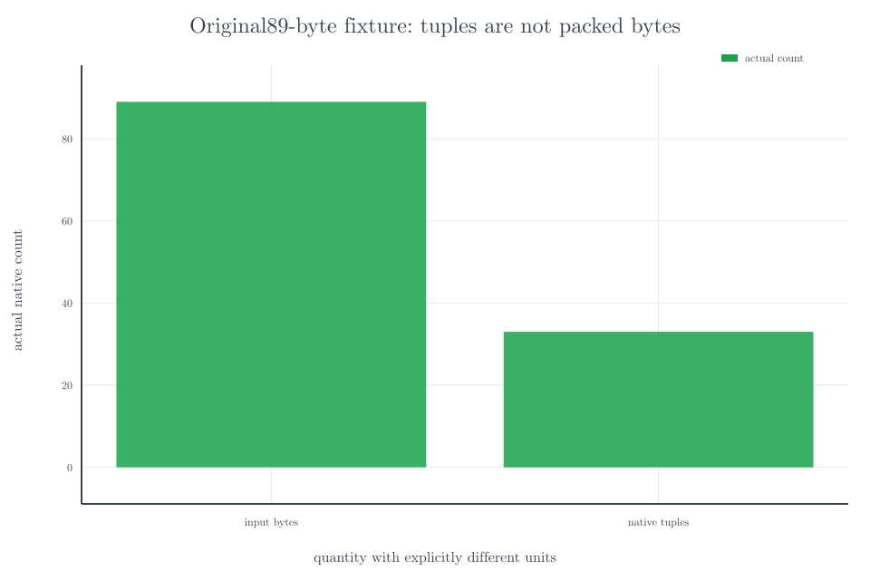
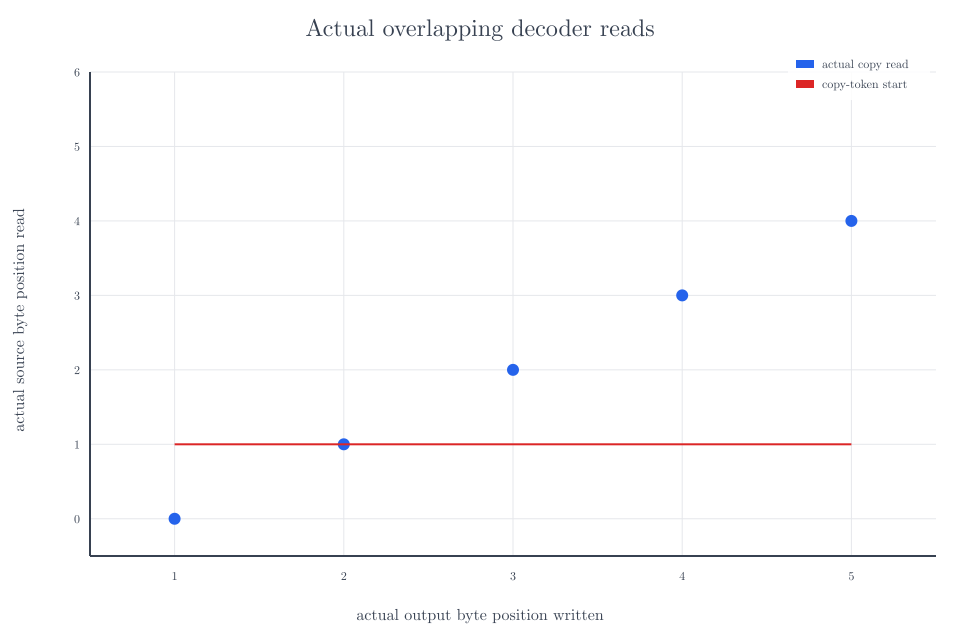
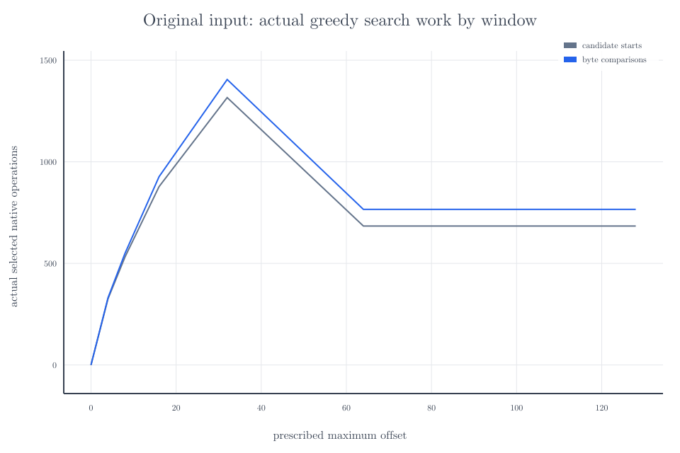

LZ77 greedy sliding-window byte compression
Abstract
LZ77 replaces repeated byte runs with backward-copy tuples and optional literal bytes. We retain the original repeated-pangram fixture, expose the real greedy search and decoder writes, validate complete token streams before indexing, and distinguish native token counts from serialized compressed byte size.
Tiny overlap-capable greedy match
A token(offset,length,next,literal) copies length bytes from offset positions behind the current output, then appends next only when literal is true. A pure literal has offset=length=0. A positive-length match requires an available positive offset. The encoder searches earlier window starts in increasing order, replacing the best only for a strictly longer match, so equal-length ties keep the oldest start and largest offset. Its final match can omit the trailing literal.
For six a bytes, the first token is a literal a. At input position one, the candidate starting at zero matches all five remaining bytes, giving offset one and length five without a final literal. Matching may extend into the current input run; decoding that tuple repeatedly reads bytes it has just produced. The real encoder trace below retains every actual comparison and emission, rather than retelling the token stream through a second matcher.
#include <dm/dm.hpp>
int main() {
std::filesystem::create_directories("build");
auto t = dm::algorithms::lz77_encode_trace("aaaaaa");
std::print("| actual token-start index | actual candidate start | actual matched-prefix before " "comparison | actual candidate byte | actual input byte | equal |\n| ---: | ---: | ---: | " "---: | ---: | --- |\n");
for (auto &c : t.comparisons)
std::print("| {} | {} | {} | {} | {} | {} |\n", c.input, c.candidate,
c.length, c.left, c.right, c.equal);
auto &token = t.analysis.tokens.back();
dm::graphics::Diagram d;
d.node("literal", {0, 0},
std::format("Actual first emission\nliteral byte{}",
unsigned(static_cast<unsigned char>(
t.analysis.tokens.front().next)))).node(
"match", {6, 0},
std::format("Actual final greedy match\noffset{}, length{}",
token.offset, token.length)).node("end", {12, 0},
std::format(
"Actual consumed input\n{} of{} bytes",
t.emissions.back().next,
t.input.size())).edge(
"literal", "match").edge("match", "end");
d.save_svg("build/lz77_tiny.svg");
}| actual token-start index | actual candidate start | actual matched-prefix before comparison | actual candidate byte | actual input byte | equal |
|---|---|---|---|---|---|
| 1 | 0 | 0 | 97 | 97 | true |
| 1 | 0 | 1 | 97 | 97 | true |
| 1 | 0 | 2 | 97 | 97 | true |
| 1 | 0 | 3 | 97 | 97 | true |
| 1 | 0 | 4 | 97 | 97 | true |

Original repeated pangram and native tuples
Retain the original89-byte text, “the quick brown fox jumps over the lazy dog.” repeated with a space, using window128 and maximum match length64. The native helper returns exactly those bytes and no trailing newline. The actual encoder returns33 tuples and the validated decoder reconstructs all89 bytes exactly. The table prints next as an unsigned byte value and labels whether that field is present, so embedded NUL literals are never confused with an absent trailing literal.
The bar chart compares input bytes with native tuple count. These are different units: a tuple contains offset/length/literal data and the library defines no packed wire representation, headers or entropy coding. Fewer tuples alone does not establish a byte compression ratio, and this educational stream is not a DEFLATE-compatible file format. No external corpus is needed to retain this exact synthetic fixture.
#include <dm/dm.hpp>
int main() {
std::filesystem::create_directories("build");
auto input = dm::algorithms::lz77_demo_text();
auto a = dm::algorithms::lz77_encode_analyze(input, 128, 64);
auto d = dm::algorithms::lz77_decode_analyze(a.tokens);
std::print("Actual original bytes {}; actual tuples {}; actual exact round trip {}; real candidate " "visits {}; actual compared bytes {}.\n\n| actual tuple index | actual offset | actual " "copied length | actual next byte or ignored placeholder | literal present |\n| ---: | ---: " "| ---: | ---: | --- |\n",
input.size(), a.tokens.size(), d.data == input,
a.work.candidates, a.work.comparisons);
for (std::size_t i = 0; i < a.tokens.size(); ++i) {
auto &t = a.tokens[i];
std::print("| {} | {} | {} | {} | {} |\n", i, t.offset, t.length,
unsigned(static_cast<unsigned char>(t.next)), t.literal);
}
auto p =
dm::graphics::RPlot::barplot({double(input.size()),
double(a.tokens.size())},
{"input bytes", "native tuples"},
"actual count", {22, 163, 74});
p.x_label("quantity with explicitly different units").y_label(
"actual native count");
p.title("Original89-byte fixture: tuples are not packed bytes").save_svg(
"build/lz77_original.svg");
}Actual original bytes 89; actual tuples 33; actual exact round trip true; real candidate visits 684; actual compared bytes 766.
| actual tuple index | actual offset | actual copied length | actual next byte or ignored placeholder | literal present |
|---|---|---|---|---|
| 0 | 0 | 0 | 116 | true |
| 1 | 0 | 0 | 104 | true |
| 2 | 0 | 0 | 101 | true |
| 3 | 0 | 0 | 32 | true |
| 4 | 0 | 0 | 113 | true |
| 5 | 0 | 0 | 117 | true |
| 6 | 0 | 0 | 105 | true |
| 7 | 0 | 0 | 99 | true |
| 8 | 0 | 0 | 107 | true |
| 9 | 6 | 1 | 98 | true |
| 10 | 0 | 0 | 114 | true |
| 11 | 0 | 0 | 111 | true |
| 12 | 0 | 0 | 119 | true |
| 13 | 0 | 0 | 110 | true |
| 14 | 12 | 1 | 102 | true |
| 15 | 5 | 1 | 120 | true |
| 16 | 16 | 1 | 106 | true |
| 17 | 16 | 1 | 109 | true |
| 18 | 0 | 0 | 112 | true |
| 19 | 0 | 0 | 115 | true |
| 20 | 22 | 1 | 111 | true |
| 21 | 0 | 0 | 118 | true |
| 22 | 26 | 1 | 114 | true |
| 23 | 27 | 1 | 116 | true |
| 24 | 31 | 3 | 108 | true |
| 25 | 0 | 0 | 97 | true |
| 26 | 0 | 0 | 122 | true |
| 27 | 0 | 0 | 121 | true |
| 28 | 36 | 1 | 100 | true |
| 29 | 29 | 1 | 103 | true |
| 30 | 0 | 0 | 46 | true |
| 31 | 14 | 5 | 113 | true |
| 32 | 45 | 39 | 0 | false |

Real decoder reads can overlap newly produced output
Before each copy token, the decoder’s current output must contain the referenced offset. Copy byte k reads source=start−offset+k and writes position=start+k. Because offset is positive, every source is earlier than its corresponding write, including when source is at or beyond the token’s starting output position. Such a source byte was produced earlier by this same token, so periodic runs need no pre-existing full-length source block.
For the six-a example, the first copy reads the original literal at position zero. Four later copies read positions one through four that the token itself has already emitted. The native byte trace records the actual token id, source position, output position and unsigned value for every real write; a literal uses the SIZE_MAX source sentinel. The plot selects real copy records and shows both actual index sequences.
#include <dm/dm.hpp>
int main() {
std::filesystem::create_directories("build");
auto tokens = dm::algorithms::lz77_encode("aaaaaa");
auto t = dm::algorithms::lz77_decode_trace(tokens);
std::vector<double> x, y;
std::print("| actual token | actual output position | actual source or SIZE_MAX literal | actual byte " "|\n| ---: | ---: | ---: | ---: |\n");
for (auto &b : t.bytes) {
std::print("| {} | {} | {} | {} |\n", b.token, b.position, b.source,
b.value);
if (b.source != SIZE_MAX) {
x.push_back(b.position);
y.push_back(b.source);
}
}
std::print("\nActual copied bytes {}; literals {}; actual reads from output produced within the same " "token {}; actual reconstructed text {}.\n",
t.analysis.copied, t.analysis.literals,
t.analysis.overlapping_reads, t.analysis.data);
auto p = dm::graphics::RPlot::create();
p.points(x, y, "actual copy read", {37, 99, 235}, 6).line(
{1, 5}, {1, 1}, "copy-token start", {220, 38, 38}, 2).x_limits(.5, 5.5).y_limits(-.5, 6).title("Actual overlapping decoder reads").x_label("actual output byte position written").y_label("actual source byte position read").save_svg("build/lz77_overlap.svg");
}| actual token | actual output position | actual source or SIZE_MAX literal | actual byte |
|---|---|---|---|
| 0 | 0 | 18446744073709551615 | 97 |
| 1 | 1 | 0 | 97 |
| 1 | 2 | 1 | 97 |
| 1 | 3 | 2 | 97 |
| 1 | 4 | 3 | 97 |
| 1 | 5 | 4 | 97 |
Actual copied bytes 5; literals 1; actual reads from output produced within the same token 4; actual reconstructed text aaaaaa.

Complete stream guards and actual window costs
The native tuple fields are int, so encoding accepts at most INT_MAX input bytes and nonnegative window/match limits. Zero window or zero match cap produces only literals. Complete input/count geometry is checked; actual counters throw rather than wrapping. Decoder validation inspects every token and computes complete output size before emitting any byte: negative fields, zero/unavailable match offsets, nonzero offsets for pure literals and empty nonliteral tokens are rejected. General match-only tuples may occur before the final tuple when supplied directly; the encoder itself omits a literal only at its final match.
An optional decoded-output cap is separate from the container’s own limit; zero disables the optional cap. The complete decoder trace admits token-count plus decoded-byte-count logical records before copying, with default million cap. The encoder’s actual trace admits original bytes plus each real comparison, completed candidate and emission record as the producer reaches it; unknown future search decisions are not fabricated. Zero disables optional capture limits. Fields, capacities, returned/runtime output copies and physical bytes are excluded; complete capture or exception is promised.
This is a naive search, with a conservative O(n*(1+window*(1+max_match))) encoder bound and O(output bytes+tokens) decoder work. Actual emission skipping often reduces comparisons substantially. The original fixed byte fixture below varies only the prescribed window, records actual candidate/comparison counts, and independently checks each returned stream by native decoding. These operation counts are not timing measurements or claims that a larger window must improve every greedy outcome.
#include <dm/dm.hpp>
int main() {
std::filesystem::create_directories("build");
auto input = dm::algorithms::lz77_demo_text();
std::vector<double> x, y, z;
std::print("| prescribed window | actual tuples | actual candidate visits | actual byte comparisons | " "exact round trip |\n| ---: | ---: | ---: | ---: | --- |\n");
for (int window : {0, 4, 8, 16, 32, 64, 128}) {
auto a = dm::algorithms::lz77_encode_analyze(input, window, 64);
std::print("| {} | {} | {} | {} | {} |\n", window, a.tokens.size(),
a.work.candidates, a.work.comparisons,
dm::algorithms::lz77_decode(a.tokens) == input);
x.push_back(window);
y.push_back(a.work.candidates);
z.push_back(a.work.comparisons);
}
auto p = dm::graphics::RPlot::create();
p.line(x, y, "candidate starts", {100, 116, 139}, 2).line(
x, z, "byte comparisons", {37, 99, 235}, 2).title(
"Original input: actual greedy search work by window").x_label(
"prescribed maximum offset").y_label("actual selected native operations").save_svg("build/lz77_work.svg");
}| prescribed window | actual tuples | actual candidate visits | actual byte comparisons | exact round trip |
|---|---|---|---|---|
| 0 | 89 | 0 | 0 | true |
| 4 | 84 | 326 | 331 | true |
| 8 | 71 | 532 | 550 | true |
| 16 | 63 | 878 | 927 | true |
| 32 | 55 | 1316 | 1405 | true |
| 64 | 33 | 684 | 766 | true |
| 128 | 33 | 684 | 766 | true |

Verification and references
Native tests exhaust all255 binary strings through length seven across four
window sizes and four match caps, comparing native tuples with independent
substring enumeration and verifying every actual comparison, emission, decoder
byte/source and logical capture count. They retain the original89/33 fixture,
real overlap, match-only streams, binary NUL/high bytes, zero settings, complete
malformed-stream guards, exact output/capture limits, empty cases and ownership.
The ten-report batch passes 95 CTest cases, 30 directly instrumented ASan/UBSan
cases, 121 compiled and executed public examples, 601/601 scoped documentation
definitions and 11 representative hovers. Independent integer, Fraction, graph,
string and NumPy references verify 82,729 records, including the complete
original seeded LSH study. Frozen comparisons preserve ordinary legacy results;
malformed-input, sentinel-collision, ownership and explicit-budget corrections
are documented above. Thirteen checkout headers and thirteen installed headers
compile independently, and an installed-header native consumer links and runs.
Each complete report program runs against the checkout library; all four native
figures are reviewed and HTML/Markdown exports preserve computed results and
image bytes. Batch receipts: build/mepml-conversion/batch-214-223/.
J. Ziv and A. Lempel(1977), A Universal Algorithm for Sequential Data Compression, IEEE Transactions on Information Theory23(3),337–343. The report illustrates the sliding-window backward-reference family with this concrete greedy tuple format, not a standardized packed compressor or an asymptotic code-length theorem for its unencoded C++ objects.